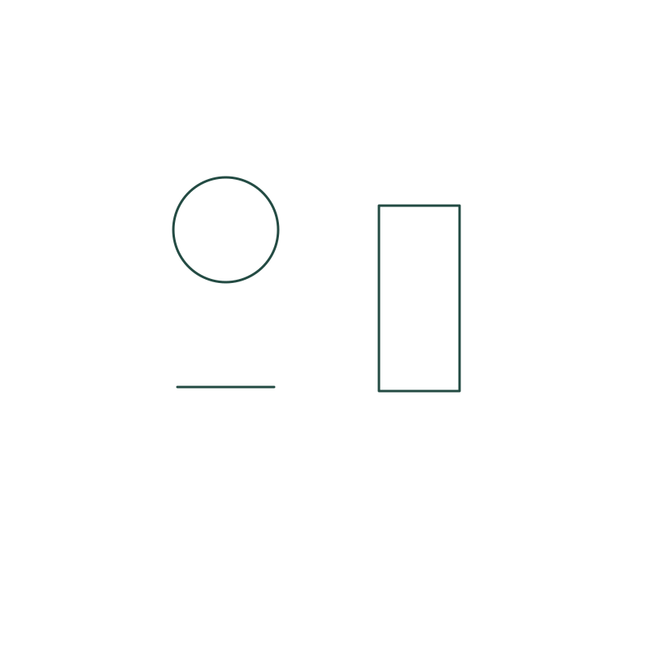

Challenge 10 · Opposite interpretations
Can both be true?
Use the same circle, rectangle and short line in two separate pictures. Add different surroundings so the two versions support opposite readings, such as welcome and unwelcome, or help and obstacle.

Your challenge
- Use the same circle, rectangle and short line in two separate pictures. Add different surroundings so the two versions support opposite readings, such as welcome and unwelcome, or help and obstacle.
- Keep every original mark visible and preserve its position relative to the other marks. Do not erase, cover or move individual marks.
- You may rotate or uniformly resize the whole starter.
- Make and save the first interpretation, then start the same challenge again for the second. Keep the starter identical in both versions.
Rough sketches are welcome. You can also imagine the scene or describe your interpretation in words.

Drawing needs no account. Print the SVG from your browser to try it on paper.
Starter image description
A circle at upper left, a tall rectangle at right, and a short horizontal line below the circle. All three marks are separate.
Reflect
Which added detail changes the interpretation most? What stays the same?
Share your possibility
Submit a drawing or text interpretation for review. Sharing is optional.
Share your interpretationTry it on paper
Two-page A4 worksheet with starter marks, reflection space and a QR code to share your interpretation.
Printable challenge PDF ↓Try before you peek
Imagine your own interpretation first, then explore three possibilities.
Explore the possibilitiesWatch this challenge
No videos are published for this challenge yet. You can still try the challenge and explore its illustrated possibilities.